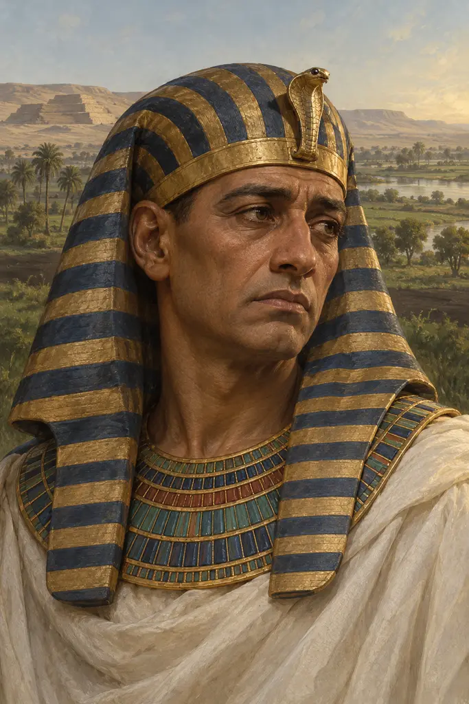
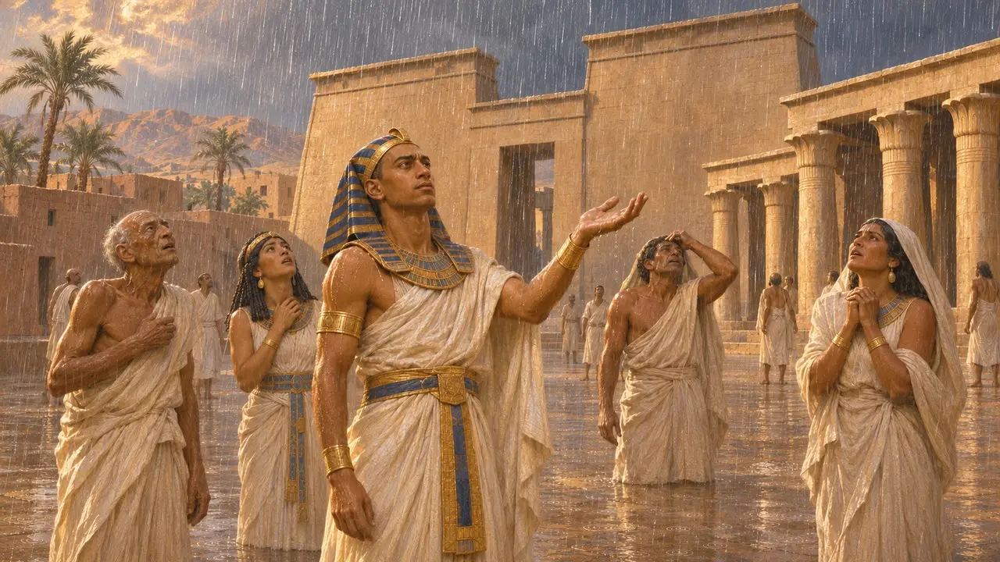
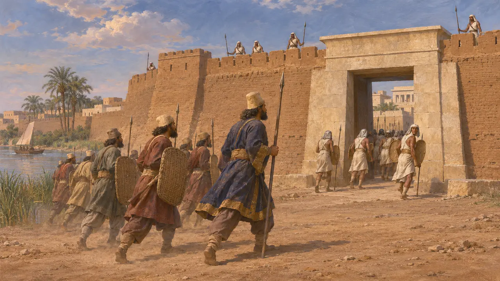
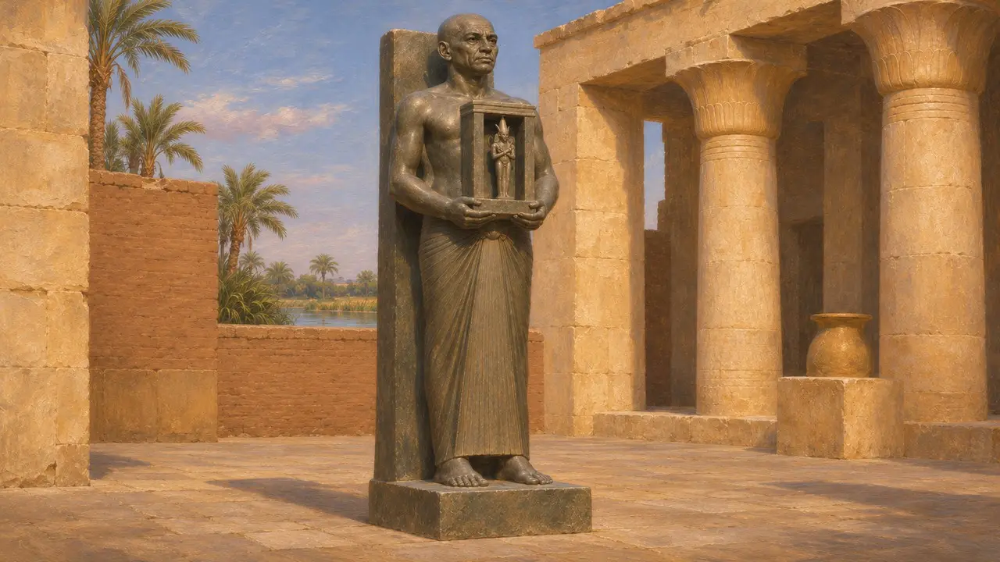
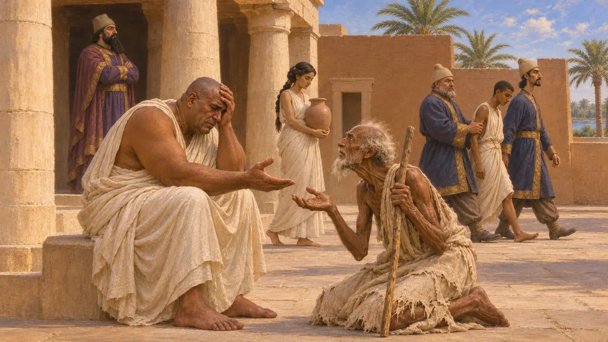
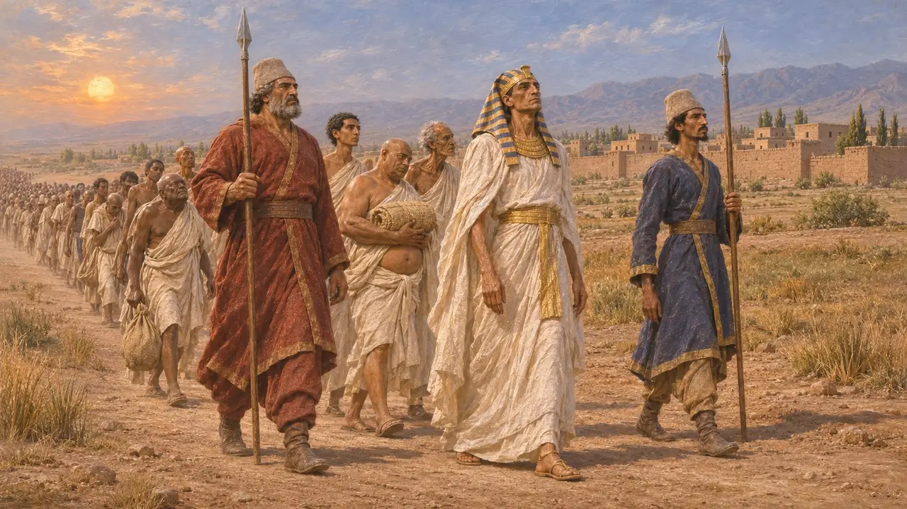

Psamético III
Último faraón de la dinastía XXVI de Egipto, reinó hacia el 526-525 a. e. c.
En el juego: Nivel 2: El Portalanza
Psamético III, al que Heródoto llama Psamenito, era hijo de Amasis y el último rey de la dinastía XXVI de Egipto. Llevaba solo unos meses en el trono cuando Cambises invadió el país, derrotó a su ejército en Pelusio y tomó Menfis. Su caída incorporó Egipto al imperio persa, que lo conservó hasta cerca del 404 a. e. c. y de nuevo del 343 al 332.
En el juego: La crónica lo presenta como el faraón vencido en Pelusio en el nivel de Menfis (525 a. e. c.), siguiendo a Heródoto. Su ejecución por tramar una revuelta es la versión de Heródoto; otros autores antiguos contaron su final de otro modo.

El hijo de Amasis y su breve reinado
Relato antiguoHeródoto cuenta que Psamenito subió al trono a la muerte de su padre Amasis, justo cuando los persas se preparaban para invadir. Refiere que durante el nuevo reinado llovió en la Tebas egipcia, cosa que los egipcios tomaron por un presagio extraño. Según el cómputo de Heródoto, Psamético reinó seis meses antes de ser capturado.
Herodotus 3.10; Herodotus 3.14

Derrota en Pelusio y caída de Menfis
Relato antiguoHeródoto narra que Psamético se enfrentó a Cambises en la desembocadura pelusíaca del Nilo y fue derrotado. Sus mercenarios griegos y carios habían matado a los hijos de Fanes, un griego que se había pasado a los persas. Los egipcios huyeron a Menfis, mataron a la tripulación de una nave enviada para exigir la rendición y luego fueron asediados hasta que la ciudad se rindió.
Herodotus 3.11-13

Lo que dicen los monumentos egipcios
En los documentosDe un reinado tan breve se conservan pocos objetos. La estatua naófora de Udjahorresne, hoy en el Vaticano, registra que comandó la flota real bajo Amasis y Psamético antes de servir a Cambises. Describe la llegada de Cambises a Egipto con hombres de todas las tierras extranjeras y menciona después una gran agitación en el país. No dice nada de la derrota de Psamético ni de su destino.
Statue of Udjahorresnet (Vatican Museums)

La prueba del dolor y la sangre de toro
Leyenda posteriorHeródoto cuenta que Cambises obligó al rey cautivo a ver a su hija acarrear agua como esclava y a su hijo ser conducido a la ejecución; Psamético solo lloró por un viejo amigo reducido a la mendicidad. Cambises se apiadó y lo mantuvo en la corte, pero Psamético fue sorprendido instigando una revuelta y murió tras beber sangre de toro. La escena está construida como un relato moral, y la muerte por sangre de toro es una historia griega que se cuenta también de otros.
Herodotus 3.14-15

Otras versiones y la fecha
En disputaCtesias llama Amirteo al rey vencido y dice que Cambises lo envió a Susa con seis mil egipcios, sin ejecutarlo. Un autor muy posterior, Polieno, afirma que los persas se escudaron con animales sagrados en Pelusio, relato que la mayoría de los historiadores rechaza. Casi todos fechan la conquista en 525 a. e. c., aunque algunos estudiosos defienden 526 a. e. c. a partir de las fuentes egipcias.
Ctesias, Persica (summary by Photius); Polyaenus, Stratagems 7.9
Fuentes
- Herodotus 3.10-15
- Statue of Udjahorresnet (Vatican Museums)
- Ctesias, Persica (summary by Photius)
- P. Briant, From Cyrus to Alexander, 2002
- Polyaenus, Stratagems 7.9